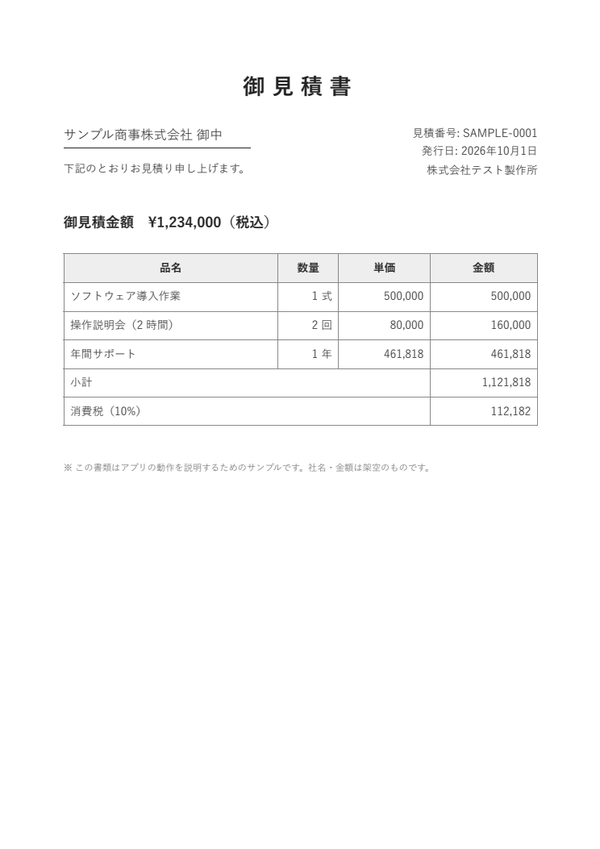
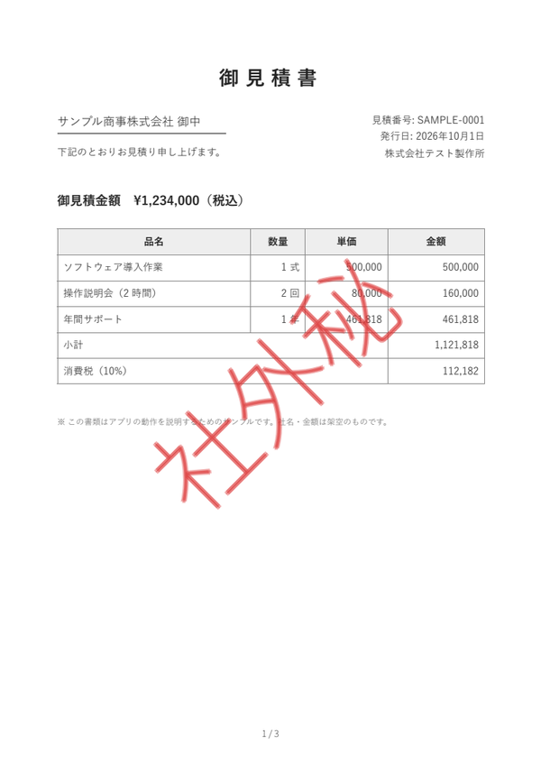
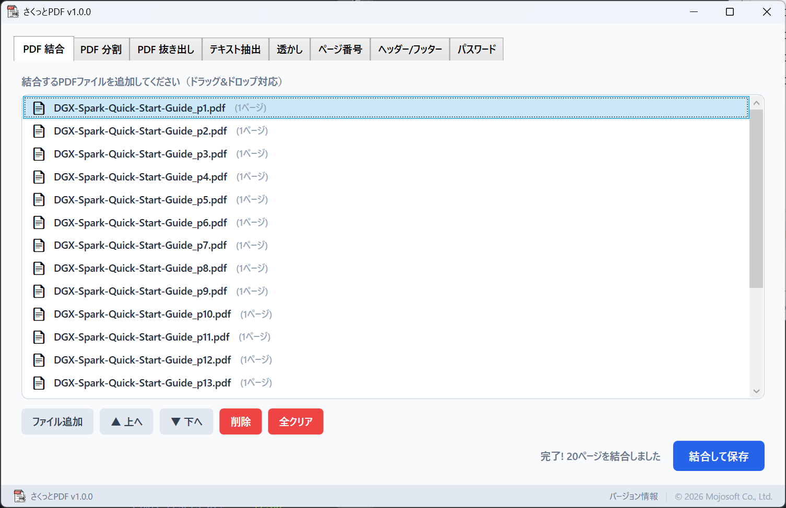
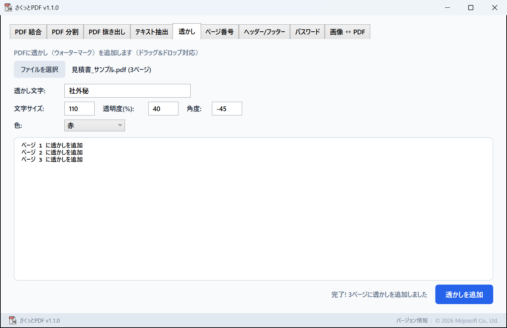
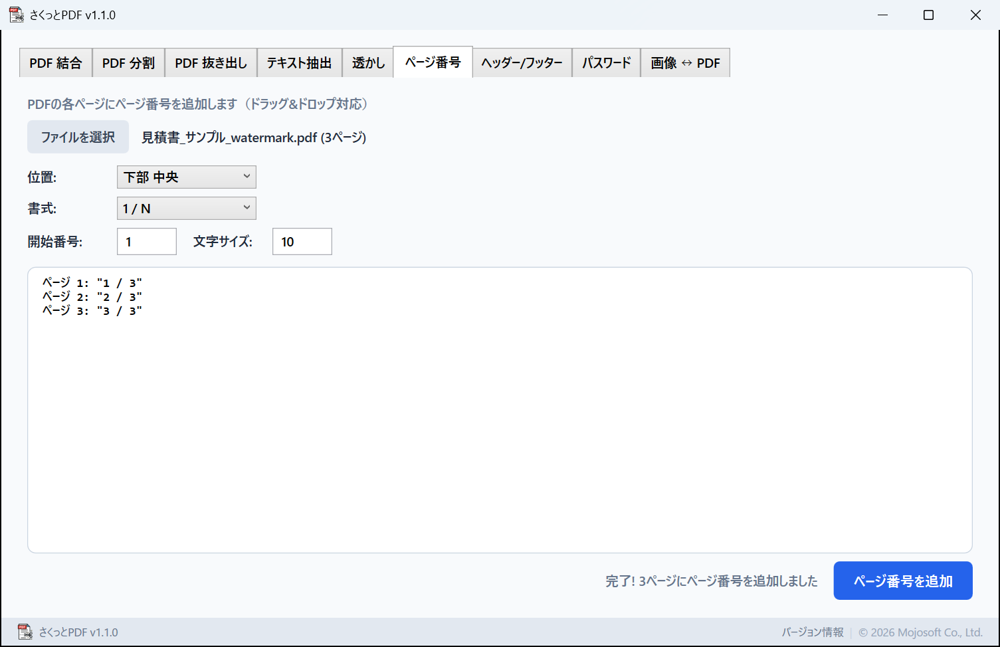

v1.1.0
- 「画像 ↔ PDF」タブを追加しました
- PDF → 画像: 各ページを PNG / JPEG で書き出し（72 / 150 / 300 dpi、ページ範囲指定）
- 画像 → PDF: 複数の画像を 1 つの PDF にまとめる（画像サイズのまま / A4 縦 / A4 横）
結合・分割・ページの抜き出し、透かし・ページ番号・ヘッダー、パスワード、画像との変換まで。ブラウザにアップロードせず、PC の中だけで処理します。


2 枚は、同じ PDF の処理前と処理後です。全 3 ページに同じように入ります。
サンプルの見積書（3 ページ・社名と金額は架空）を、さくっとPDF（v1.1.0）で処理しました。透かしは「社外秘」・赤・文字サイズ 110・透明度 40%・角度 −45°。アプリの画面は、下の「使い方」にあります。
Microsoft Store から購入して、すぐに使えます。アプリのアカウント登録はいりません。
まずPDF を入れる
やりたいことのタブを選んで、PDF をドラッグ＆ドロップ。結合なら何本でも入れて、上へ・下へで順番を並べ替えられます。

つぎに仕上がりを選ぶ
透かしの文字・色・大きさ・角度、ページ番号の位置と書式、分ける範囲などを選びます。透かしやヘッダーには日本語も使えます。

あとは保存する
保存する名前と場所を選べば完了です。初めは「_watermark」「_numbered」などを付けた名前が入っているので、元の PDF とは別に保存できます。

よく使う 9 つの作業を、タブを切り替えるだけで。
まとめる、分ける、必要なページだけ取り出す。
「社外秘」などの文字を、全ページに入れます。
番号や日付、書類名を、全ページに入れます。
開くときのパスワードと、編集のパスワードを設定します。
ページを画像に、画像を PDF にします。
PDF の文字を、テキストファイルに書き出します。
お手元の PDF を、渡しやすい形に整えます。
透かしで扱いを示し、パスワードで開ける人を限れます。ファイルをどこにもアップロードせずに済みます。
何本もの PDF を 1 つに結合して、「1 / N」のページ番号を付けられます。会議資料や提出書類に。
何枚もの写真を A4 のページに収めて、1 つの PDF にまとめられます。
「1-5, 10」のように指定して抜き出したり、ページごとに分けたりできます。
ブラウザで使う変換サイトと違い、PDF をどこかにアップロードすることはありません。
開発元（Mojosoft）に PDF やファイル名が送られることはありません。アカウント登録も、利用状況の収集もありません。詳しくは プライバシーポリシー をご覧ください。
| 読み込めるファイル | PDF 画像 → PDF: PNGJPEGBMPGIFTIFFテキスト抽出は、文字の情報を持つ PDF が対象です（スキャンした画像だけの PDF からは文字を取り出せません）。 |
|---|---|
| 書き出せる形式 | PDF（結合・分割・抜き出し・透かし・ページ番号・ヘッダー/フッター・パスワード・画像 → PDF） テキスト（.txt） 画像: PNG・JPEG（72・150・300 dpi） |
| 保存先と名前 | 保存するたびに名前と場所を選べます（初めは「_watermark」「_numbered」などを付けた名前）。分割と画像の書き出しは、選んだフォルダにまとめて保存します。 |
| 表示言語 | 日本語・英語（Windows の言語設定に合わせて切り替わります） |
| 動作環境 | Windows 10（バージョン 2004）以降・64 ビット |
はい。「社外秘」などの日本語を、透かし・ヘッダー・フッター・ページ番号に使えます。日本語のフォントをアプリに内蔵しています。
はい。「PDF 結合」に入れて、上へ・下へで順番を並べ替えてから保存します。
はい。「PDF 抜き出し」で「1-5, 10, 15-20」のようにページを指定すると、1 つの PDF にまとめて保存します。
はい。開くときの「閲覧パスワード」と、編集用の「編集パスワード」を設定でき、印刷やコピーを許可するかも選べます。
はい。「画像 ↔ PDF」で、PNG または JPEG に書き出せます。解像度は 72・150・300 dpi から選べます。
はい。「画像 ↔ PDF」の「画像 → PDF」に入れて、ページを「A4 縦」などにすると、各写真を A4 のページの中央に収めた PDF になります。
はい。PDF の処理は、すべて PC の中で行います。
はい。Microsoft Store で一度購入すれば、月額料金なしで使い続けられます。
Microsoft Store 版は自動で最新版に更新されます。